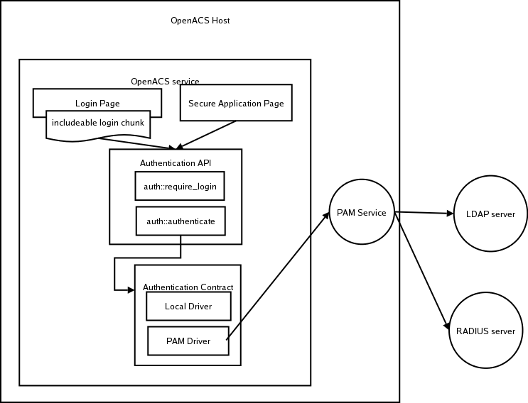

| Prev | Chapter 15. Kernel Documentation | Next |
|---|
People have plenty of usernames and passwords already, we don't want them to have yet another. We want people to be able to log in to OpenACS with the same password they use to log in to any other system.
Besides, administrators have better things to do than create accounts for people. So we want them to be able to create just one account on a central server (e.g. LDAP or RADIUS), and when they log on to OpenACS, an account will automatically be created for them here.
Finally, security is increased with fewer passwords, since users generally can't remember all those passwords, so they tend to keep them all the same and never change them.
Transparent: Users don't have to do anything special to get an account on the local OpenACS system, if they already have an account on the external authentication server.
Fall-back: Users who don't have an account on the external authentication server are still allowed to create a local account on OpenACS. This could be for external students who should have access to .LRN, but not to the rest of the university's resources.
Authentication Client Only: We want OpenACS to be able to authenticate by asking some remote authority to verify the user's username/password combination. The goal is explicitly not (at this point) to have OpenACS act as an authentication server for other systems, although this could be easily added later. The goal is also not to devise an infrastructure for letting OpenACS access resources in various other systems on the user's behalf, such as IMAP, iCalendar, SMB file servers, etc., although this is definitely an interesting use-case.
Easy configuration: We would like people to be able to configure this without having to write code. In particular, we want to build drivers that know how to talk with LDAP, RADIUS, PAM, etc., and which won't have to be locally modified. Only configuration and policies should change, code should not.
Usability: The solution must be easy to use for end users and administrators alike. There's frequently a positive feedback effect between usability and security, because when authentication schemes have poor usability, users will think up ways to circumvent them.
Open and modular: The design should be on the one hand open to add other authentification mechanisms when needed and on the other hand very modular to enable a start with minimal requirements (driver implementations) as soon as possible.
The problem can be split into several logically separate parts. Each has a section below.
Authority: The name of an authority trusted to authenticate users.
Authentication Driver: An implementation of the authentication service contract, which talks to an authentication of a certain type, e.g. PAM, RADIUS, LDAP, or Active Directory.
Authentication API: The API through which login pages and applications talk to the authentication service. There's one and only one implementation of the authentication API, namly the one included in OpenACS Core.
Authentication Driver API: The service contract which authentication drivers implement.
Authentication:

Account Management (NO PICTURE YET)
Batch Synchronization (NO PICTURE YET)
| Feature | Status | Description |
|---|---|---|
| New API | ||
| EXT-AUTH-01 | A | Extend Authentication/Acct Status API |
| EXT-AUTH-03 | A | Account Creation API |
| EXT-AUTH-05 | A | Password Management API |
| EXT-AUTH-30 | A | Authority Management API |
| Feature | Status | Description |
|---|---|---|
| Login | ||
| EXT-AUTH-04 | A | Rewrite login, register, and admin pages to use APIs |
| EXT-AUTH-38 | A | ad_form complain feature |
| EXT-AUTH-19 | A | Rewrite password recovery to use API |
| EXT-AUTH-21 | A | Rewrite email verification with API |
| EXT-AUTH-28 | A | Username is email switch |
Users will log in using a username, a authority, and a password. The authority is the source for user/password verification. OpenACS can be an authority itself.
Each user in OpenACS will belong to exactly one authority, which can either be the "local" OpenACS users table, in which case the password column is used, or it can be some external authority, which will be communicated with using some protocol, as implemented by an authentication driver.
Username will be separate from email address. It can be an email address, it can look like an email address but not be the name of an actual email mailbox, or it can be something else entirely.
We're assuming that user information (name, email, etc.) will either already be in the users table through a batch synchronization job, or that the relevant authentication implementation supports real-time synchronization of user data. Specifically, if you want remote users who haven't yet logged in to OpenACS to show up in user searches, you'll have to do the batch synchronization.
All in all, the login box will be an includeable template and look like this:
Username: ________
Password: ________
Authority: [URZ ]
Athena
Local
[Forgot my password]
[New user registration]
If there's only one active authority, we don't display the authority drop-down element at all.
| Feature | Status | Description |
|---|---|---|
| Configuration | ||
| EXT-AUTH-07 | A | Admin pages to control Ext-Auth parameters |
The site-wide systems administrator can configure the authentication process from a page linked under /acs-admin.
Authorities - ordered list of authorities defined
Account Registration Allowed: Yes/No. Account registration can be disabled altogether.
Registration authority - the authority in which accounts should be created, using the relevant driver, if account registration is allowed.
Username is email? - instead of asking for username, we'll ask for email. And we'll store the value in both columns, username and email. This is a setting that spans all authorities, and is primarily meant for backwards compatibility with the old OpenACS login process.
The local authority driver is an encapsulation of current functionality within an driver matching a service contract. The other drivers call external functions. The possible functions for each authority are split into several drivers for convenience. One driver handles authentication, one account creation, and one changing passwords.
| Feature | Status | Description |
|---|---|---|
| create service contract | ||
| EXT-AUTH-16 | A | Create service contract for Authentication |
| EXT-AUTH-17 | A | Create service contract for Acct. Creation |
| EXT-AUTH-29 | A | Create service contract for Passwd Management |
| Feature | Status | Description |
|---|---|---|
| EXT-AUTH-18 | A | Authority configuration data model |
Each authority is defined like this:
Authority pretty-name, e.g. "URZ"
Authentication Driver, e.g. "RADIUS". In practice, this would be a reference to a service contract implementation.
Authentication Driver configuration settings, e.g. host name, port, etc., as required by the particular driver. Note that this is per authority, not per driver, i.e., you can have multiple authorities with the same driver but different configuration options.
AuthenticationAllowed - true/false, so you can disable login through some authority without having to delete the authority, and hence also all the users who belong to that authority.
ForgottenPasswordUrl - a URL to redirect to instead of trying to use the authentication driver's password management features.
ChangePasswordUrl - a URL to redirect to instead of trying to use the authentication driver's password management features.
Account Creation Driver, e.g. "RADIUS". In practice, this would be a reference to a service contract implementation. The reason we have separate drivers for authentication and account creation is that organizations are likely to have a home-grown account registration process.
Account Creation Driver configuration settings, e.g. host name, port, etc., as required by the particular driver. Note that this is per authority, not per driver, i.e., you can have multiple authorities with the same driver but different configuration options.
RegistrationUrl - instead of registering using OpenACS, redirect to a certain URL site for account registration.
RegistrationAllowed - true/false, so you can disable registration using this account.
Sort order: Preference order of authorities.
HelpContactText: Text or HTML to be displayed when user has trouble authenticating with the authority. Should include contact information such as a phone number or email.
Each authority driver will have a set of configuration options dependent on the driver, such as host, port, etc. We will need to find a mechanism for the driver to tell us which configuration options are available, a way to set these, and a way for the driver to access these settings.
OpenACS will come pre-configured with one authority, which is the "local" authority, meaning we'll authenticate as normal using the local users table. This will, just like any other authority, be implemetned using a service contract.
| Feature | Status | Description |
|---|---|---|
| Synchronizing and linking users | ||
| EXT-AUTH-28 | A | Create service contract for Batch Sync. |
| EXT-AUTH-38 | A | Batch User Synchronization API |
| EXT-AUTH-38 | A | IMS Synchronization driver |
| EXT-AUTH-08 | A | Automation of batch Synchronization |
| EXT-AUTH-15 | B | On-demand synchronization |
Regardless of the login method, the user needs to have a row in the OpenACS users table. This can happen through a batch job, in real-time, or both in combination. We use the IMS Enterprise 1.1 specification.
Batch job means that we do a synchronization (import new users, modify changed, purge deleted) on a regular interval, e.g. every night. You can also decide to have a monthly full synchronization, plus daily incremental ones. That's up to you. The advantage is that you have all users in OpenACS, so when you search for a user, you'll see all the organization's users, not just those who happen to have used the OpenACS-based system. The down-side is that it takes some time for user information to propagate. This can be remedied by using the real-time solution. The batch job will also require error logging and an admin interface to view logs.
If an email already belongs to some other user, we log it as an error.
A user will always belong to exactly one authority, which can be either the "local" authority or some other. Thus, the OpenACS user's table will have to be augmented with the following columns:
Authority. Reference to the site-wide authorities list. The authority which can authenticate this user.
Authority-specific username.
Real-time means that the first time the user logs into OpenACS, we'll query the authority that authenticated him for information about this user. That authentication authority will then give us at least first names, last name and email. The pros and cons are the opposite of batch jobs. Using both in combination is ideal.
Note: One solution to the "two users from different authorities have the same email" problem above would be to allow users to belong to multiple authorities. Then we would notice that the email already exists, ask the user if he thinks he's the same person, and if so, ask him to prove so by authenticating using the other authority. Thus he'll have just authenticated in two different authorities, and we can record that this is the same person. We'd still have a problem if there was an email conflict between two accounts on the same authority. Hm. I don't think it's worth spending too much time trying to solve this problem through software.
| Feature | Status | Description |
|---|---|---|
| EXT-AUTH-31 | ||
| EXT-AUTH-31 | A | Upgrade user data model for ext-auth |
After having authenticated using the relevant authority driver, we'll look for the username/authority pair in the users table.
If we don't find any, that means that we're either not doing batch synchronizing, or that the user has been added since the last sync. In that case, we'll try to do a real-time synchronization, if the driver supports it. If it does, it'll return email, first_names, last_name, and other relevant information, and we'll create a row in the local users table using that information.
If that doesn't work, we'll tell the user that their account isn't yet available, and the driver will supply a message for us, which could say "The account should be available tomorrow. If not, contact X."
If a user doesn't have an account, the site-wide configuration can allow the user to register for one, as defined in the configuration discussed above. This section is about normal account registration through a authority driver.
The account creation service contract implementation will need to tell us which information to ask the user for:
Required Fields: A list of fields which are required.
Optional Fields: A list of fields which are optional.
The fields to choose from are these:
Username
First names
Last name
URL
Password
Secret question
Secret answer
It should return the following:
Creation status (OK, Try-Again, Fail)
Creation message: What went wrong, or a welcome message.
Account status: Is the account ready for use?
User information: first_names, last_name, email, url, password, password_hash, secret_question, secret_answer. The driver only needs to return the columns which were changed or added through the registration process. Typically, only the "local" driver will return password and secret question/answer.
After creating the remote account, a local account is created with the information gathered through the form/returned by the driver.
By default, a local account creation implementation is provided, which will create a new OpenACS user, and, in addition to the default local account creation above, also store the password in hashed form.
Password management is about changing password, retrieving password, and resetting password.
It's up to the authority driver implementation to decide whether to support any or all of these features, and to say so using the CanXXX methods (see driver API below).
Additionally, the authority can be configured with a URL to redirect to in the case of forgotten passwords, or when the user desires to change password.
| Feature | Status | Description |
|---|---|---|
| EXT-AUTH-20 | ||
| EXT-AUTH-20 | A | Login over HTTPS |
Login pages must be able to be sent over a secure connection (https), so your password won't get sent over the wire in cleartext, while leaving the rest of the site non-secure (http). I believe that this requires some (minor) changes to the current session handling code.
Email verification needs to be handled both at registration and at login.
In both cases, it'll be handled by the driver sending automatically sending the email containing a link for the user to verify his account. Then the driver will return an account status of "closed,temporary", and a message that says "Check your inbox and click the link in the email".
OpenACS will have a page which receives the email verification, for use by local accounts. Other authorities will have to implement their own page, most likely on the authority's own server.
There are a number of items which touch on external authentication and session management. And even though they're not directly linked to external authentication, I would recommend that we handle a number of them, either because they're important for security, or because it makes sense to fix them while we're messing with this part of the codebase anyway.
| Feature | Status | Description |
|---|---|---|
| EXT-AUTH-33 | ||
| EXT-AUTH-33 | A | Untrusted Logins |
I like the idea of having multiple login levels:
Not logged in
Untrusted login: We'll show you un-sensitive personal content, but won't let you modify anything or see personal data. A normal login becomes untrusted after a certain amount of time, and the user will have to re-enter his/her password in order to gain access to personal data. Untrusted login never expires, unless explicitly done so through either changing password or clicking a special "expire all logins" link.
Normal login: The user is logged, and has type his password sufficiently recently that we trust the login. All normal operations are allowed. Will degrade to untrusted login after a specified amount of time.
Secure login: The user is logged in over a secure connection (HTTPS), potentially even using a special secure password. This would be for sensitive actions, such as credit card transactions.
There are two advantages to this. First, when people's login expires, we can ask them to re-enter only their password, and not both username and password, since we'll still remember who they were the last time their login was valid. This is a much faster operation (the password input field will be focused by default, so you just type your password and hit Return) that typing both username and password, which will make it practical to have your site configured to expire people's login after e.g. 2, 4, or 8 hours.
The other advantage is that we can still offer certain functionality to you, even when your login is not trusted. For example, we could let you browse publicly available forums, and only when you want to post do you need to log in. This makes it even more feasible to have a more secure login expiration setting.
By default, auth::require_login would
bounce to the login page if the user is only logged in at the
untrusted level. Only if you explicitly say
auth::require_login -untrusted will we give you
the user_id of a user who's only logged in in untrusted
mode.
Similarly, ad_conn user_id will continue
to return 0 (not logged in) when the user is only logged in
untrusted, and we'll supply another variable, ad_conn
untrusted_user_id, which wlll be set to the user_id for
all login levels.
This should ensure that we get full access to the new feature, while leaving all current code just as secure as it was before.
| Feature | Status | Description |
|---|---|---|
| EXT-AUTH-34 | ||
| EXT-AUTH-34 | A | Expire Logins |
Currently, OpenACS is unusable in practice without persistent login. The login will expire after just a few minutes of inactivity, and you'll get bounced to the login page where you have to enter both email and password again. Unacceptable in practice.
We should change the default, so a non-persistent login doesn't expire until you either close your browser, or a few hours have elapsed. Even if you are constantly active, the login should still expire after at most x number of hours. We can still make the login expire after a period of inactivity, but the amount of time should be configurable and default to something reasonable like an hour or so.
This will require looking into and changing the design of the current session handling code.
| Feature | Status | Description |
|---|---|---|
| EXT-AUTH-23 | ||
| EXT-AUTH-23 | Single sign-on |
Instead of redirecting to the login page, auth::require_login can redirect to an authentication server, which can redirect back to a page that logs the user in. This should be very easy to implement.
Alternatively, if you want to combine this with fallback to OpenACS accounts, we would instead present the normal login screen, but put a button which says "Login using X", where X is the redirection-based external authority.
| Feature | Status | Description |
|---|---|---|
| EXT-AUTH-22 | ||
| EXT-AUTH-22 | B | rewrite cookie handling |
Currently, if you've ever left a permanent login cookie on someone elses machine, that person will be forever logged in until he/she explicitly logs out. You can change your password, you can do anything you want, but unless a logout is requested from that particular browser, that browser will be logged in forever.
I want to change our session handling code so that old login cookies can be expired. This would be done automatically whenever you change your password, and we could also offer a link which does this without changing passwords. It's an important security measure.
The implementation is simply to autogenerate some secret token which is stored in the users table, and is also stored in the cookie somehow. Then, whenever we want to expire all logins, we'll just regenerate a new secret token, and the other cookies will be void. Of course, we don't want to incur a DB hit on every request, so we'll need to cache the secret token, or only check it when refreshing the session cookie, which, I believe, normally happens every 10 minutes or so.
| Feature | Status | Description |
|---|---|---|
| EXT-AUTH-24 | ||
| EXT-AUTH-24 | A | Email on password change |
As an additional security measure, we should email the account's email address whenever the password is changed, so that he/she is at least alerted to the fact.
| Feature | Status | Description |
|---|---|---|
| EXT-AUTH-25 | ||
| EXT-AUTH-25 | A | Implement password policy |
Again, to increase security, we should add password policies, such as passwords needing to be changed after a certain number of days, change on next login (after a new random password has been generated), or requiring that the password satisfies certain complexity rules, i.e. both upper and lowercase characters, numbers, special chars, etc.
It would good to extend the current maximum password length from 10 to at least 32 characters.
| Feature | Status | Description |
|---|---|---|
| EXT-AUTH-26 | ||
| EXT-AUTH-26 | B | Login without explicit domain |
In order to make it easier for people, we've been toying with the idea of a functionality like this:
If the user enters "foobar@ix.urz.uni-heidelberg.de", it is translated to mean username = "foobar", authority = "ix.urz.uni-heidelberg.de".
If the user enters "foobar", it's recognized to not include any authority, and the default authority of "ix.urz.uni-heidelberg.de" is used.
If the user enters "foo@bar.com", it's recognized as not belonging to any known authority, and as such, it's translated to mean username = "foo@bar.com", authority = "local".
If this is deemed desirable, a way to implement this would be through these settings:
Split: A regexp which will split the user's entry into username and authority parts. For example "^([^@]+)(@[^@]+)?$". An easier to use but less flexible method would be that you simply specify a certain character to split by, such as "@" or "\". If the regexp doesn't match, or in the latter case, if there's more than one occurrence of the specified character sequence, the split will fail, signaling that the user's entry was not valid.
Default authority: The default authority will be the first one in the sort order.
The relevant code in user-login.tcl would look like this:
if { ![auth::split_username -username_var username -authority_var authority] } {
# bounce back to the form with a message saying that the login wasn't valid.
ad_script_abort
}
# username will now contain username
# authority will now contain authority
| Feature | Status | Description |
|---|---|---|
| EXT-AUTH-27 | ||
| EXT-AUTH-27 | B | Who's online list |
While we're touching the session handling code, anyway, it would be nice to add a feature to show who's currently online, a nice real-time collaboration feature frequently requested by members of the community. This is particularly interesting when integrated with a chat or instant messaging service like Jabber.
What I'm concretely suggesting is that we keep a record of which authenticated users have requested pags on the site in the last x minutes (typically about 5), and thus are considered to be currently online. There's nothing more to it. This lets us display a list of "active users" somewhere on the site, and make their name a link to a real-time chat service like Jabber.
We've already made the changes necessary to security-procs.tcl to do this on an earlier project, but haven't quite finished the work and put it back into the tree.
| Feature | Status | Description |
|---|---|---|
| EXT-AUTH-28 | ||
| EXT-AUTH-28 | implement subsite-level config |
If we want to, we could let subsite administrators configure the login process for that particular subsite. This would probably only entail letting the subsite admin leave out certain authorities defined site-wide, and change the sort order.
I think we should leave this out until we have a use case for it, someone who'd need it.
| Feature | Status | Description |
|---|---|---|
| EXT-AUTH-32 | ||
| EXT-AUTH-32 | A | Parameters for Service Contract Implementation |
| EXT-AUTH-35 | A | Make the Authentication API a service contract |
For completely free-form authentication logic and mechanisms, something like Andrew Grumet's Pluggable Authentication for OACS Draft is interesting. He's proposing a scheme where the entire user interaction is encapsulated in, and left entirely to, a service contract. This certainly opens up more advanced possibilities, such as perhaps smart cards, personal certificates, etc.
I have chosen not to go this route, because I think that most people are going to want to use a username/password-based scheme, and having easy configuration through a web UI is more important than total flexibility at this point.
Besides, we can always do this in the future, by letting the
public Authentication API (auth::require_login
and auth::authenticate) be implemented through a
service contract.
| Feature | Status | Description |
|---|---|---|
| EXT-AUTH-36 | ||
| EXT-AUTH-36 | A | Authenticate against multiple servers |
Both OKI and OpenACS supports a form of stacking, where you can be logged into multiple authorities at the same time. This is useful if, for example, you need to get login tokens such as Kerberos tickets for access to shared resources.
I can see the value in this, but for simplicity's sake, I'm in favor of keeping this use-case out of the loop until we have someone with a real requirement who could help us guide development.
For now, OpenACS is still more of an integrated suite, it doesn't access many outside applications. I think it would be excellent for OpenACS to do so, e.g. by using an IMAP server to store emails, an iCal server to store calendar appointments, LDAP for user/group data and access control lists, SMB for file storage, etc. But at the moment, we don't have any users of such things that are ready. We have some who are on the steps, but let's wait till they're there.
| Feature | Status | Description |
|---|---|---|
| Implement specific drivers | ||
| EXT-AUTH-09 | A | Create Auth. drivers for Local Authority |
| EXT-AUTH-10 | A | Create Acct. Creation driver for Local Authority |
| EXT-AUTH-11 | A | Create Auth. driver for PAM |
| EXT-AUTH-12 | X | Create Acct. Creation driver for PAM - this functionality is explicitly excluded from PAM |
| EXT-AUTH-13 | A | Create Acct. Creation driver for LDAP |
| EXT-AUTH-14 | A | Create Auth. driver for LDAP |
We'll need drivers for:
Operating system (Linux/Solaris) PAM: Delegate to the operating system, which can then talk to RADIUS, LDAP, whatever. This is convenient because there'll be plenty of drivers for the OS PAM level, so we don't have to write them all ourselves. The downside is that we can't do things like account creation, password management, real-time account synchronization, etc., not supported by PAM (I'm not entirely sure what is and is not supported).
RADIUS
LDAP
RADIUS is a simple username/password-type authentication server.
It also supports sending a challenge to which the user must respond with the proper answer (e.g. mother's maiden name, or could be additional password), but we will not support this feature.
A RADIUS client implementation in Python can be found in the exUserFolder module for Zope (documentation).
We'd really appreciate feedback on this proposal. Please follow up at this openacs.org forums thread.
Threads and links collected by Carl Blesius.
Draft Proposal by Andrew Grumet.
Yale CAS, a central authentication service a' la Passport.